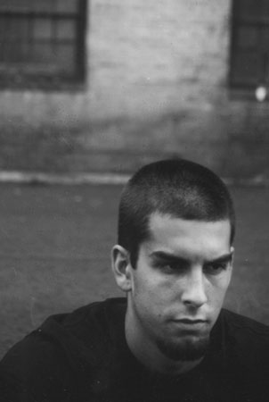

|
|
- Biography -

ROB BOURDON
Date Of Birth : 1/20/79
INSTRUMENT: Drums
GEAR:
- Gretsch kit
- GibraltarHardware
- Zildjian cymbals
- Remo heads
- Vater sticks
- Rane headphone amp
- Alesis DM-5 drum module
- Shure E-1 in-ear monitors
- D-drum trigger pads
Rob Bourdon was born in Calabasas, California, and has been drumming ever since he was 11 years old. Rob was first
inspired to become a drummer after he saw his first Aerosmith concert. Since Rob didn't have to re-record any of his
drum samples for the Reanimation, album, the band appointed him to listen to each track and voice his own opinions about
it, which in turn the band usually adherred to, letting him be a big influence on the album. Although Rob and Joseph
appear in a constant power struggle to control the beat, Rob's old school methods can almost always keep the song together
on its own.
QUOTE:
"I feel blessed to have had the opportunity to make an album with five of my closest friends. It has been a great
experience touring and having the chance to meet our fans and street teamers. Thank you to everyone who has shown
their love and support." -Rob
|